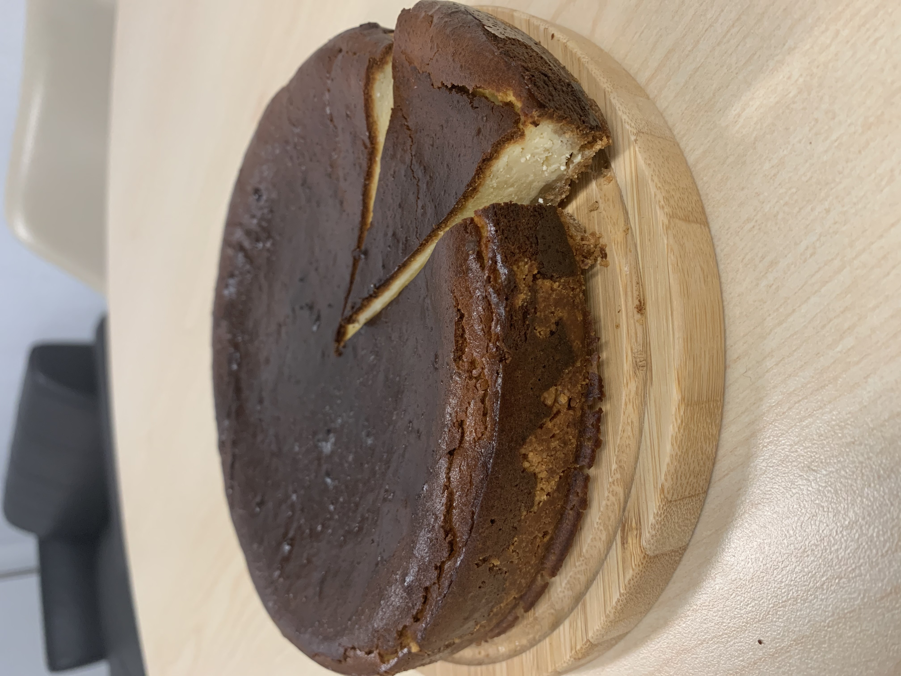
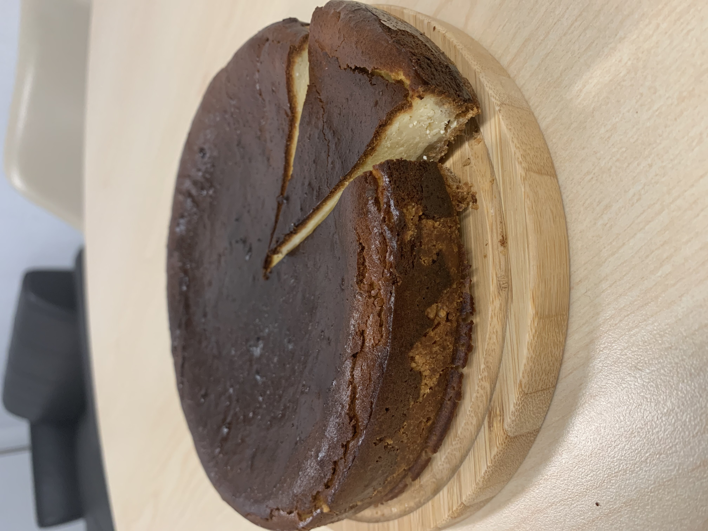

Other HandMade Desserts
& Contact Hours
⏳︎ Update Time:
Wednesday evening every 2 weeeks
🕒 Available Time:
After 6p.m. on weekdays/Full time Saturday
📸 Follow me on Instagram: @yio.hall_made_desserts
🎂 Customize desserts:
Contact Whatsapp +886 966442191 / DM Instagram account @yio.hall_made_desserts
Hope you liked my page! If you want to
contact me for further homemade cakes or cookies, please click "Contact Info" on the page above.
More recipes will be uploaded in the future. Stay tuned!